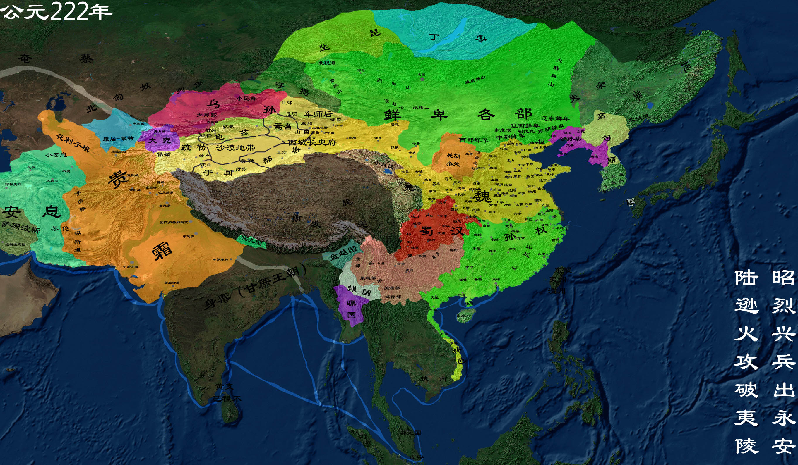

三国
三国（220年－280年）是上承东汉下启西晋的一段历史时期，分为曹魏、蜀汉、东吴三个政权。 220年，曹丕篡汉称帝，国号“魏”，次年刘备在成都延续汉朝，史称蜀汉。229年孙权称帝，国号“吴”，至此三国鼎立格局正式形成。
【相关人物】
[曹操]
[刘备]
[关羽]
.......
[更多人物]
【相关书籍】
[三国志]
[三国争霸那些事]
.......
[更多书籍]

公元200年，官渡之战
官渡之战，是东汉末年“三大战役”之一，也是中国历史上著名的以弱胜强的战役之一。建安五年（公元200年），曹操军与袁绍军相持于官渡（今河南中牟东北），在此展开战略决战。曹操奇袭袁军在乌巢的粮仓（今河南封丘西），继而击溃袁军主力。此战奠定了曹操统一中国北方的基础
公元207年 曹操统一北方之战
曹操统一北方之战，是指东汉献帝初平二年（191年）至建安十三年（208年），曹操先后消灭长江中下游以北各割据势力，统一中国北方大部地区的战争。 曹操在统一北方的战争历时17年，是曹魏的立国之战，并为后来西晋统一中国奠定了牢固的基础。
公元208年 赤壁之战
赤壁之战，是指东汉末年，孙权、刘备联军于建安十三年（208年）在长江赤壁（今湖北省赤壁市西北）一带大破曹操大军的战役。这是中国历史上以少胜多、以弱胜强的著名战役之一，是三国时期“三大战役”中最为著名的一场，也是中国历史上第一次在长江流域进行的大规模江河作战，标志着中国军事政治中心不再限于黄河流域。孙刘联军最后以火攻大破曹军，曹操北回，孙、刘各自夺去荆州的一部分，奠定了三国鼎立的基础。
公元209年 刘备入蜀
蜀汉（221年5月15日 —263年），三国之一。公元221年，刘备在成都称帝，国号汉，史称“蜀”或“蜀汉”， 亦称“刘蜀”、“季汉”。蜀汉王朝疆域所及，北至武都、汉中，东抵巫峡，南包云、贵，西达缅甸东部。 占有今云南全省，四川、贵州二省的大部，陕西，甘肃南部、广西西北部及缅甸东北部、越南西北部。 263年为魏所灭。共历二帝，四十三年。
公元219年 关羽战死
公元219年，农历己亥年，建安二十四年，刘备攻占汉中，晋位汉中王，关羽水淹七军，威震华夏，吕 蒙白衣渡江袭取荆州。关羽（？—220年），本字长生，后改字云长，河东郡解县（今山西运城）人， 被称为“美髯公”。早年跟随刘备颠沛流离，辗转各地，和刘备、张飞情同兄弟，因而虽然受到了曹操的厚待， 但关羽仍然借机离开曹操，去追随刘备。赤壁之战后，关羽助刘备、周瑜攻打曹仁所驻守的南郡， 而后刘备势力逐渐壮大，关羽则长期镇守荆州。
公元220年，曹丕称帝，国号魏。
汉朝末年，皇权衰落，群雄割据。曹操挟持汉献帝，历经数十年征战，统一北方，被封为魏王，丞相，掌握汉末实权。220年正月，曹操病死。死后，曹丕继位魏王和丞相，掌管大权。虽然曹操曾经挟天子以令诸侯，却从不敢登上皇帝的宝座。